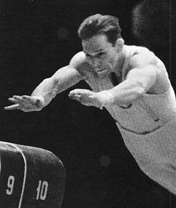

Yuri Titov (USSR)
1959 European AA Champion
1956 and 1960 Olympic AA Bronze Medalist
1962 World AA Champion

Medal Total
Olympic Games: 1
Gold, 5 Silver, 3 Bronze
World Championships: 4 Gold, 2 Silver, 4 Bronze
European Championships: 7 Gold, 4 Silver, 2 Bronze
Yuri Titov was born on November 27, 1935 in Omsk. When he was 9, his family moved to Kiev. Yuri liked playiing all types of sports, and began gymnastics at age 13. He was a very successful gymnast. Six years after retiring he was elected president of the FIG, a post he held from 1972 to 1996. Titov was inducted into the International Gymnastics Hall of Fame in 1999. His wife, Valeria Kuzmeko, was a 6-time USSR tennis champion who competed at .
Competition Results
1953
All-Union Youth Championships (boys' category): 2nd AA
1955
USSR Cup: 6th AA
1956
Olympic Games: 1st Team, 3rd AA, 2nd HB, 3rd V,
5th FX, 5th PH
USSR Championships: 6th AA, 5th PH
USSR Cup: 3rd AA, 1st V, 3rd FX, 3rd HB
1957
European Championships: 2nd AA, 1st V, 2nd R, 3rd
HB, 4th PH
Kiev-Tampere (FIN) Dual Meet: 1st Team, 1st AA
USSR Championships: 3rd AA, 2nd PH, 2nd PB, 2nd HB
USSR Cup: 2nd AA, 2nd FX, 2nd PH, 2nd V, 3rd HB
1958
HUN-Ukranian SSR Dual Meet: 1st Team, 2nd AA
ROM-Ukranian SSR Dual Meet: 1st Team, 2nd AA
USSR Championships: 1st AA, 1st V, 2nd R
World Championships: 1st Team, 3rd AA, 1st V, 3rd
FX, 3rd R, 3rd HB, 4th PB
1959
European Championships: 1st AA, 1st PH, 1st R, 1st
V, 1st PB, 2nd HB, 3rd FX
USSR Championships: 2nd AA, 1st FX, 1st PH, 2nd PB, 2nd HB
1960
Olympic Games: 2nd Team, 3rd AA, 2nd FX, 4th V,
5th PH, 5th PB, 5th HB, 6th R
USSR Championships: 2nd AA, 1st V, 2nd HB, 3rd R, 6th FX, 6th PB
USSR Cup: 2nd AA
1961
European Championships: 2nd AA, 1st R, 1st HB,
4th PH
USSR Championships: 1st AA, 1st R, 1st HB, 2nd FX, 2nd V, 3rd PH
USSR Cup: 1st AA
1962
CSSR-GDR-UKR: 1st Team, 1st AA
USSR Championships: 2nd HB, 3rd V, 4th PB
USSR Cup: 6th AA
World Championships: 2nd Team, 1st AA, 1st R, 4th HB
1963
University Games: 4th AA
1964
FRA-USSR Dual Meet: 1st Team, 5th AA
Olympic Games: 2nd Team, 13th AA, 2nd HB
USSR Cup: 2nd V, 4th R
1965
Mexican International: 5th AA, 1st V, 1st HB, 2nd R, 4th FX, 6th PB
USSR Championships: 6th AA
1966
FIN-USSR Dual Meet: 1st Team, 3rd AA
FRG-USSR Dual Meet: 1st Team, 3rd AA
USSR Championships: 4th AA, 2nd HB
USSR Cup: 4th AA, 2nd HB
World Championships: 2nd Team, 13th AA
YUG-Ukrainian SSR Dual Meet: 1st Team, 2nd AA
This page was created on December
19, 2004 and was last updated on November 5, 2024.
© Gymn Forum